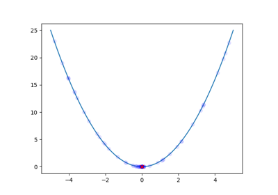
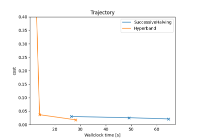
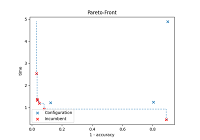

Examples¶
We provide several examples of how to use SMAC with Python. Practical use-cases were chosen to show the variety of SMAC.
Basics¶

Quadratic Function


Multi-Fidelity and Multi-Instances¶

Multi-Layer Perceptron Using Multiple Epochs
Multi-Layer Perceptron Using Multiple Epochs

Multi-Objective¶


ParEGO
Command-Line Interface¶
SMAC can call a target function from a script. This is useful if you want to optimize non-python code.